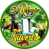

<nav class="w-full h-32 flex z-10 absolute bg-transparent transition-all duration-300" id="navbar">
    <div class="px-4 flex justify-between items-center w-full h-32 md:px-12">

        <!-- Small screen menu start -->
        <figure class="w-1/3 max-w-fit lg:hidden">
            <a href="" class="">
                
            </a>
        </figure>
        <div class="lg:hidden nav_buttons_container flex space-x-4 mt-2 w-24">
            <div>
                <select class="language_selector bg-none" name="language" id="saving_language">
                    <option class="es rounded-2xl bg-slate-50 text-slate-400 border-none text-sm" value="es">
                        ES
                    </option>
                    <option class="en rounded-2xl bg-slate-50 text-slate-400 border-none text-sm" value="en">
                        EN
                    </option>
                </select>
            </div>
            <div>
                <div class="lg:hidden" x-data="{ open: false }">
                    <button 
                    class="flex w-10 h-10 items-center justify-center border-none text-secondary hover:bg-secondary hover:text-primary hover:rounded-md"
                    @click="open = true">
                        <svg class="w-6 h-6" fill="none" stroke="currentColor" viewBox="0 0 24 24" xmlns="http://www.w3.org/2000/svg">
                            <path stroke-linecap="round" stroke-linejoin="round" stroke-width="2" d="M4 6h16M4 12h16M4 18h16">
                            </path>
                        </svg>
                    </button>
                    <div
                        class="flex flex-col fixed top-0 right-0 bottom-0 left-20 bg-tertiary md:left-64 z-30 translate-x-0"
                        x-show="open" 
                        x-on:click.away="open = false"
                        id="navbar_mobile">
                        <div class="flex justify-between h-20 my-5 mx-12">
                            <figure class="flex">
                                
                            </figure>
                            <button @click="open = false">
                                <svg class="w-6 h-6" fill="none" stroke="currentColor" viewBox="0 0 24 24" xmlns="http://www.w3.org/2000/svg">
                                    <path stroke-linecap="round" stroke-linejoin="round" stroke-width="2" d="M6 18L18 6M6 6l12 12">
                                    </path>
                                </svg>
                            </button>
                        </div>
                        <div class="flex-grow overflow-y-auto relative py-5 px-12">
                            <ul>
                                <a href="{% url 'about' %}" class="flex items-center outline-none py-5 font-semibold text-lg text-primary hover:text-secondary focus-visible:text-secondary">
                                    Acerca de
                                    <svg class="w-5 h-5  ml-1 mt-0.5.5" fill="none" stroke="currentColor" viewBox="0 0 24 24" xmlns="http://www.w3.org/2000/svg">
                                        <path stroke-linecap="round" stroke-linejoin="round" stroke-width="2" d="M9 5l7 7-7 7">
                                        </path>
                                    </svg>
                                </a>
                                <a href="{% url 'team' %}" class="flex items-center outline-none py-5 font-semibold text-lg text-primary hover:text-secondary focus-visible:text-secondary">
                                    Equipo
                                    <svg class="w-5 h-5  ml-1 mt-0.5" fill="none" stroke="currentColor" viewBox="0 0 24 24" xmlns="http://www.w3.org/2000/svg">
                                        <path stroke-linecap="round" stroke-linejoin="round" stroke-width="2" d="M9 5l7 7-7 7">
                                        </path>
                                    </svg>
                                </a>
                                <a href="" class="flex items-center outline-none py-5 font-semibold text-lg text-primary hover:text-secondary focus-visible:text-secondary">
                                    Cómo Llegar
                                    <svg class="w-5 h-5  ml-1 mt-0.5" fill="none" stroke="currentColor" viewBox="0 0 24 24" xmlns="http://www.w3.org/2000/svg">
                                        <path stroke-linecap="round" stroke-linejoin="round" stroke-width="2" d="M9 5l7 7-7 7">
                                        </path>
                                    </svg>
                                </a>
                                <a href="" class="flex items-center outline-none py-5 font-semibold text-lg text-primary hover:text-secondary focus-visible:text-secondary">
                                    Atractivos
                                    <svg class="w-5 h-5  ml-1 mt-0.5" fill="none" stroke="currentColor" viewBox="0 0 24 24" xmlns="http://www.w3.org/2000/svg">
                                        <path stroke-linecap="round" stroke-linejoin="round" stroke-width="2" d="M9 5l7 7-7 7">
                                        </path>
                                    </svg>
                                </a>
                                <a href="" class="flex items-center outline-none py-5 font-semibold text-lg text-primary hover:text-secondary focus-visible:text-secondary">
                                    Servicios
                                    <svg class="w-5 h-5  ml-1 mt-0.5" fill="none" stroke="currentColor" viewBox="0 0 24 24" xmlns="http://www.w3.org/2000/svg">
                                        <path stroke-linecap="round" stroke-linejoin="round" stroke-width="2" d="M9 5l7 7-7 7">
                                        </path>
                                    </svg>
                                </a>
                                <a href="" class="flex items-center outline-none py-5 font-semibold text-lg text-primary hover:text-secondary focus-visible:text-secondary">
                                    Reseñas
                                    <svg class="w-5 h-5  ml-1 mt-0.5" fill="none" stroke="currentColor" viewBox="0 0 24 24" xmlns="http://www.w3.org/2000/svg">
                                        <path stroke-linecap="round" stroke-linejoin="round" stroke-width="2" d="M9 5l7 7-7 7">
                                        </path>
                                    </svg>
                                </a>
                                <a href="{% url 'events' %}" class="flex items-center outline-none py-5 font-semibold text-lg text-primary hover:text-secondary focus-visible:text-secondary">
                                    Eventos
                                    <svg class="w-5 h-5  ml-1 mt-0.5" fill="none" stroke="currentColor" viewBox="0 0 24 24" xmlns="http://www.w3.org/2000/svg">
                                        <path stroke-linecap="round" stroke-linejoin="round" stroke-width="2" d="M9 5l7 7-7 7">
                                        </path>
                                    </svg>
                                </a>
                            </ul>
                        </div>
                    </div>
                </div>
            </div>
        </div>
        <!-- Small screen menu end -->

        <!-- Large screen menu start -->
        <div class="hidden nav-row bg-transparent lg:flex justify-between items-center w-full max-w-screen-2xl px-8 py-0 h-32">
            <figure class="logo_container w-1/4 mb-8 flex justify-center items-center">
                <a href="{% url 'index' %}" class="w-1/2 h-20">
                    
                </a>
            </figure>
            <div class="navigation w-full justify-center">
                <ul class="top-navbar flex flex-wrap items-center justify-center max-w-3xl m-0 p-0 font-semibold">
                    <a href="{% url 'about' %}" class="text-white mx-10 mt-0 mb-2"><li class="text-base">Acerca de</li></a>
                    <a href="{% url 'team' %}" class="text-white mx-10 mt-0 mb-2"><li class="text-base">Equipo</li></a>
                    <a href="{% url 'index' %}" class="text-white mx-10 mt-0 mb-2"><li class="text-base">Cómo Llegar</li></a>
                    <div class="bg-white w-full my-1 h-[0.17rem]"></div>
                    <a href="{% url 'index' %}" class="text-white mx-10 mt-0 mb-2"><li class="text-base">Atractivo</li></a>
                    <a href="{% url 'index' %}" class="text-white mx-10 mt-0 mb-2"><li class="text-base">Servicios</li></a>
                    <a href="{% url 'events' %}" class="text-white mx-10 mt-0 mb-2"><li class="text-base">Eventos</li></a>
                </ul>
            </div>
            <div class="nav_buttons flex flex-col content-end min-w-fit">
                <div class="icons_social_container flex">
                        <a href="" class="icons_social border-white">
                            <svg class="w-5 h-5 slate-50" xmlns="http://www.w3.org/2000/svg" viewBox="0 0 24 24" fill="transparent" stroke="#fff" stroke-width="2" stroke-linecap="round" stroke-linejoin="round" class="feather feather-instagram">
                                <rect x="2" y="2" width="20" height="20" rx="5" ry="5"></rect>
                                <path d="M16 11.37A4 4 0 1 1 12.63 8 4 4 0 0 1 16 11.37z"></path>
                                <line x1="17.5" y1="6.5" x2="17.51" y2="6.5"></line>
                            </svg>
                        </a>
                        <a href="" class="icons_social border-white">
                            <svg class="w-5 h-5 slate-50"xmlns="http://www.w3.org/2000/svg" viewBox="0 0 24 24" fill="transparent" stroke="#fff" stroke-width="2" stroke-linecap="round" stroke-linejoin="round" class="feather feather-facebook">
                                <path d="M18 2h-3a5 5 0 0 0-5 5v3H7v4h3v8h4v-8h3l1-4h-4V7a1 1 0 0 1 1-1h3z"></path>
                            </svg>
                        </a>
                        <a href="" class="icons_social border-white">
                            <svg class="w-5 h-5 slate-50"xmlns="http://www.w3.org/2000/svg" viewBox="0 0 24 24" fill="transparent" stroke="#fff" stroke-width="2" stroke-linecap="round" stroke-linejoin="round" class="feather feather-youtube">
                                <path d="M22.54 6.42a2.78 2.78 0 0 0-1.94-2C18.88 4 12 4 12 4s-6.88 0-8.6.46a2.78 2.78 0 0 0-1.94 2A29 29 0 0 0 1 11.75a29 29 0 0 0 .46 5.33A2.78 2.78 0 0 0 3.4 19c1.72.46 8.6.46 8.6.46s6.88 0 8.6-.46a2.78 2.78 0 0 0 1.94-2 29 29 0 0 0 .46-5.25 29 29 0 0 0-.46-5.33z"></path>
                                <polygon points="9.75 15.02 15.5 11.75 9.75 8.48 9.75 15.02"></polygon>
                            </svg>
                        </a>
                </div>
                 <div class="nav_buttons_container flex mt-2 justify-center">
                        <figure>
                            <select class="language_selector bg-none" name="language" id="saving_language">
                                <option class="es rounded-2xl bg-slate-50 text-slate-400 border-none text-sm" value="es">ES</option>
                                <option class="en rounded-2xl bg-slate-50 text-slate-400 border-none text-sm" value="en">EN</option>
                            </select>
                        </figure>
                 </div>
            </div>
        </div>
        <!-- Large screen menu end -->
    </div>
</nav>